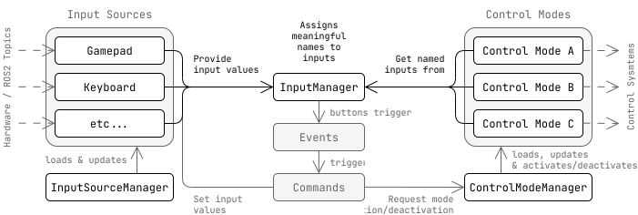

Teleop Modular Documentation
Welcome to the documentation for the teleop_modular packages!
Teleop Modular is a general framework for multimodal teleoperation in ROS2 based on pluginlib.
Guides
To get started using Teleop Modular, please follow these guides:
Using multiple control modes
Adding a lock
These guides cover various ways to provide inputs:
Complex input using state Commands
Writing an InputSource plugin
Providing inputs without an input source using services
These guides discuss advanced topics:
Running multiple teleop_nodes
Architecture
{kind=link}
There are two main plugin types used in the teleop_modular framework:
Input Sources provide input values
Control Modes use meaningfully named inputs to create high level control commands to send to some control system.
Hint
What does meaningfully named mean? Most teleop packages map inputs from specific sources directly to control messages:
twist.linear.x = joy_msg[3]; //< Not meaningful, and tightly coupled to joy
Instead, teleop_modular allows control modes to ask for with a name that describes what the input is actually used for:
linear_.x = inputs.axes["linear.x"]; //< get input shared_ptr with meaningful name
// ...
twist.linear.x = *linear_.x;
Currently, two main input types are supported:
Axes represent any number input.
Buttons represent any boolean input.
Axes are used for most values in a control mode. However, buttons can be used in ways you might not expect. A button can act as a “locked” value to E-stop the robot when true. Buttons can also invoke events, which run commands that can modify the teleop system in some way, such as setting an input value, or activating/deactivating control modes.
The source code for the framework can be found in the teleop_modular GitHub repository.
UML Class Diagrams
The following UML class diagrams describes the internal implementation in more detail for each package.
input_source

{kind=link}